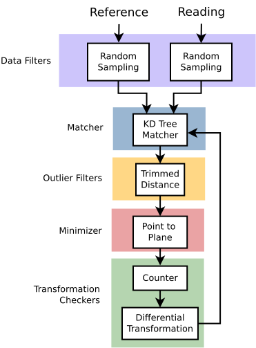
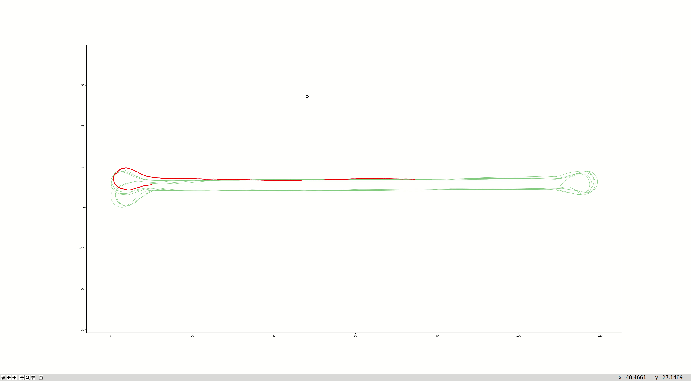

icp算法的20年
ETH-libpointmatcher使用¶
使用的eigen版本需和pcl的一致，
科学实验方法的三个原则: 可比较(可评估)、可复现(稳定重复)、可证明(可解释) 算法内在：什么参数、不同参数下表现的差异 算法外在：准确度、精度
The first one is to remove some points that do not bring any valuable infor- mation for the registration. As the complexity of the algorithm is linear in the number of points, reducing this number can have a significant impact on the time of registration. The second use of filters can be to add information to the point. The typical example is the inference of local structural properties of the shape, such as normal information or curvature. This information, which is usually not present in the raw sensor data, can allow for better registration through a more precise association of the points, or the computation of the error to minimize
different platform
| parameters | Arto(rough Terrain outdoor robot) |
|---|---|
| DataFilter |
ICP of ETH¶
Dependency¶
- eigen:matrix and liear-albebra library
- libnabo:from eth, a fast k nearest neighbour library for low-dimensional spaces
- libboost
Data flow of ETH-ICP
¶


Theory of eth-icp algorithm¶
 1. Reading and Reference Sources
shapes P are point clouds and can be written in a matrix form with each column a point vector:
$$
\mathcal P = \bold P=[p_1\quad p_2\quad ...\quad p_N]
$$
where \(p_i\)is a point and N the number of points in the point cloud
Features is an Eigen matrix typically containing the coordinates of the points which form the cloud. Each column corresponds to a point in the cloud. The rows correspond to the dimensions of the points in homogeneous coordinates. Homogeneous coordinates are used to allow for translations and rotations. For 2D point clouds, there will thus be 3 rows and for 4 rows for 3D point clouds.
1. Reading and Reference Sources
shapes P are point clouds and can be written in a matrix form with each column a point vector:
$$
\mathcal P = \bold P=[p_1\quad p_2\quad ...\quad p_N]
$$
where \(p_i\)is a point and N the number of points in the point cloud
Features is an Eigen matrix typically containing the coordinates of the points which form the cloud. Each column corresponds to a point in the cloud. The rows correspond to the dimensions of the points in homogeneous coordinates. Homogeneous coordinates are used to allow for translations and rotations. For 2D point clouds, there will thus be 3 rows and for 4 rows for 3D point clouds.

- Transformation Functions In case of a rigid transformation, if points are represented using homogeneous coordinates, a transformation T can be represented as a matrix T such that:
$$ \mathcal T(\mathcal P) = \boldsymbol{TP} = [\boldsymbol{T}\boldsymbol{p_1}\quad \boldsymbol{T}\boldsymbol{p_2}\quad ...\quad \boldsymbol{T}\boldsymbol{p_N}] $$
\(\boldsymbol{T}\) is then of the form:
$$
\boldsymbol{T} = \begin{bmatrix}\boldsymbol{R} & \boldsymbol{t} \ \boldsymbol{0^T} & 1
\end{bmatrix}
$$
where\(\boldsymbol{R}\) is a rotation matrix and \(\boldsymbol{t}\) is a translation vector
The generic formula computiing the final transform Equation becomes a simple matrix product:
$$ \begin{aligned} \hat{\mathcal{T}}{\mathbb{A}}^{\mathbb{B}} = ({\mathop{\bigcirc}\limits{ \mathcal{T}{i-1}^i)\circ\mathcal{T{init}} \ \Leftrightarrow \hat{\boldsymbol{T {\mathbb{A}}^{\mathbb{B}}=\left(\mathop{\prod}\limits_{i}\boldsymbol{T}{i ^i\right)\boldsymbol{T}{init} \end{aligned} $$
$$
\hat{TB_A}=arg\min_{T}(error(T(PA),Q^B))
$$

- Data Filters
- Feature Enhancement
- Descriptor Enhancement
- Feature Reduction features are sparse but not uniformly distributed. Nevertheless, the fact that sensors can provide a huge number of readings on a short period of time reates a bottleneck in term of computation power for the association as explained later
-
Sensor Noise example1: random subsampling in order to decimate the point cloud:
$$ \mathcal{P}^{\acute{}} = datafilter(\mathcal{P}) = {\boldsymbol{p}\in\mathcal{P}:\eta(\boldsymbol{p}) < \theta} $$
where \(\eta\in[0,1)\) is a uniform-distributed random value and θ ∈ [0, 1] a fixed threshold, corresponding to the fraction of points to keep
example2: the computation of normal vectors in a point cloud:
$$ \mathcal{P}^{\acute{}} = datafilter(\mathcal{P}) = {\boldsymbol{p}\in\mathcal{P}:\eta(\boldsymbol{p}) < \theta} $$
datafilter example:
 Surface Normal Filter
The surface normal to each point is estimated by finding a number of neighboring points and taking the eigen-vector corresponding to the smallest eigen-value of all neighboring points.
Required descriptors: none
Surface Normal Filter
The surface normal to each point is estimated by finding a number of neighboring points and taking the eigen-vector corresponding to the smallest eigen-value of all neighboring points.
Required descriptors: none
Output descriptor:
normals
densities
eigValues
eigVectors
 Maximum Density Filter
This filter is used to homogenize the density of a point cloud by rejecting a sub-sample of points in high-density regions.Points are only considered for rejection if they exceed a density threshold, otherwise they are preserved.
Required descriptors:
Maximum Density Filter
This filter is used to homogenize the density of a point cloud by rejecting a sub-sample of points in high-density regions.Points are only considered for rejection if they exceed a density threshold, otherwise they are preserved.
Required descriptors: densities
Output descriptor: none

Experiment¶
Test Platform:offline test and online(ranger) test Test Data:24/06/2020 dataset for mapping from hengtong Test Algorithm:eth-icp and pcl-icp Test Result:
offline test¶
comparison of the post poses and lidar-odometry by eth-icp
 comparison of the post poses and lidar-odometry by icp-pcl
comparison of the post poses and lidar-odometry by icp-pcl

online test¶
comparison of the post poses and lidar-odometry by eth-icp

 comparison of the post poses and lidar-odometry by icp-pcl
comparison of the post poses and lidar-odometry by icp-pcl